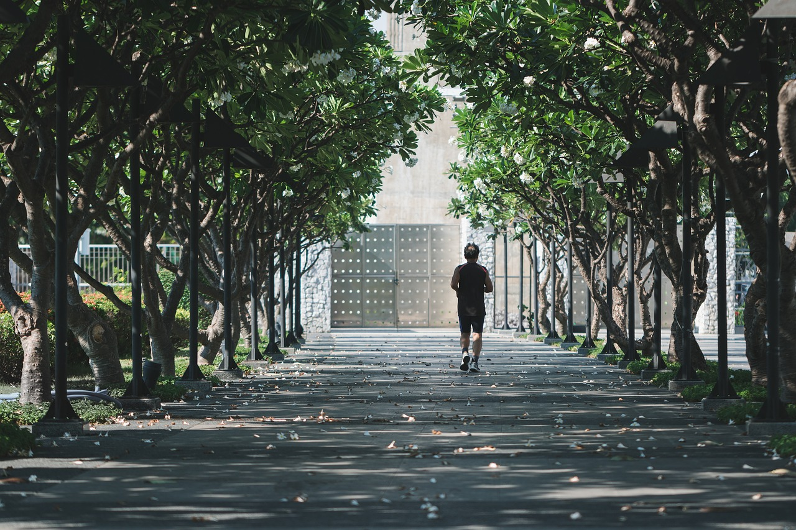
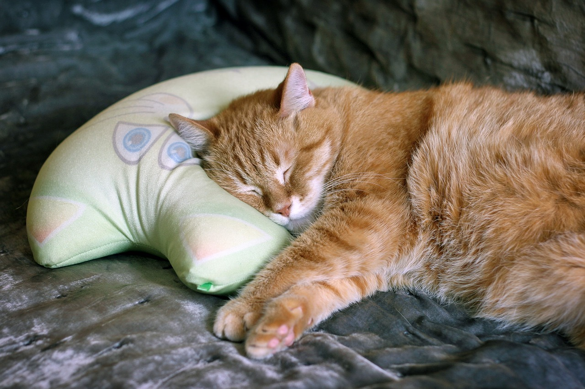
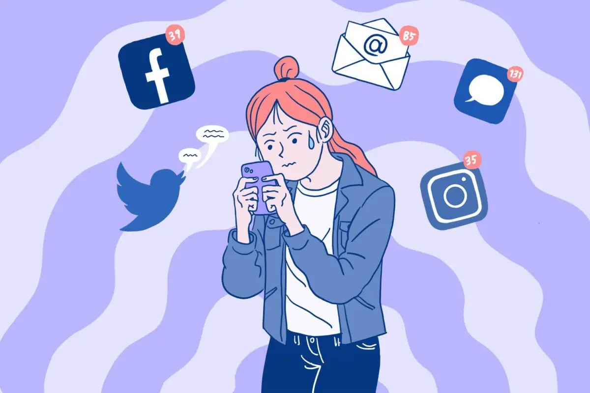
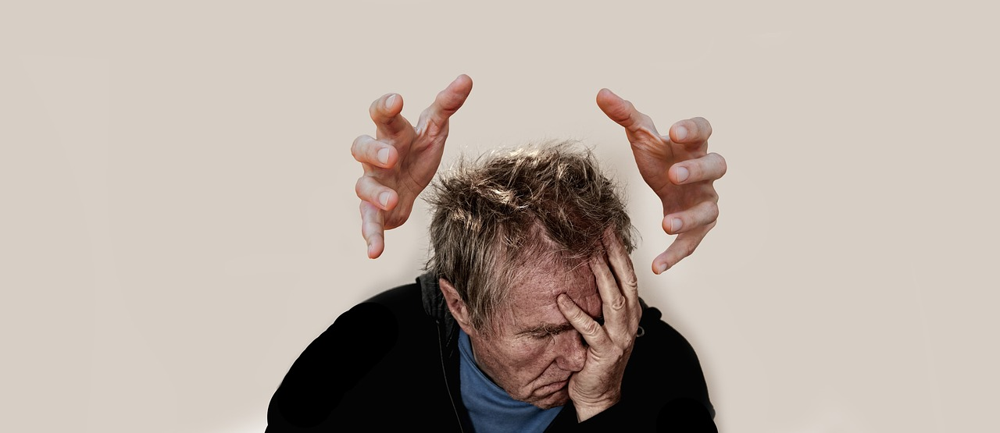
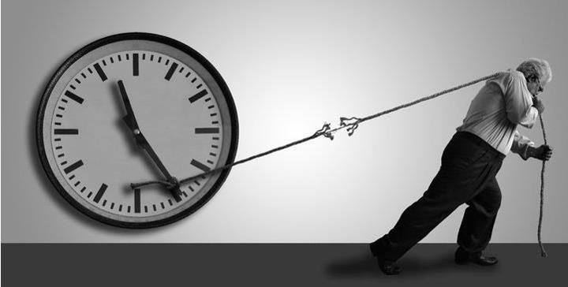

SOSYAL BAĞLANTINIZI GÜÇLENDİRİN

Aile ve arkadaşlarınızla daha fazla vakit geçirin.Ortak ilgi alanlarınızı paylaşabileceğiniz etkinlikler düzenleyin.
DİJİTAL DETOKS YAPIN
Belirli bir süre boyunca (örneğin bir hafta sonu) dijital cihazlardan uzak durun
FİZİKSEL AKTİVİTELER YAPIN
Düzenli egzersiz yapmak endorfin salgılar ve ruh halinizi iyileştirir.Yürüyüşe çıkmak veya spor yapmak iyi bir başlangıç olabilir.
HOBİ EDİNİN
Dijital cihazlar dışında keyif alacağınız yeni hobiler keşfedin.Resim yapmak,kitap okumak,müzik dinlemek veya müzik aleti çalmak gibi aktiviteler faydalı olabilir.
MINDFULNESS VE MEDİTASYON

Meditasyon ve mindfulness tekniklerini uygulamak zihninizi sakinleştirir ve stresi azaltır.
UYKU DÜZENİ OLUŞTURUN
Kendinize düzenli uyku saatleri belirleyin ve ekran kullanımını yatmadan en az bir saat önce sonlandırın
DİJİTAL İÇERİKLERİ GÖZDEN GEÇİRİN
Tükettiğiniz içeriklerin kalitesini arttırmaya çalışın. Negatif veya sağlıksız içeriklerden uzak durun
PROFESYONEL DESTEK ALIN
Gerekirse bir terapist veya danışmanla görüşmek duygusal yüklerinizi hafifletmenize yardımcı olabilir.
ZAMAN SINIRLAMASI YAPIN
Digital medya veya haber uygulamalarında geçirdiğiniz zamanı günlük olarak izleyin ve belirli bir süreyle sınırlı tutun. Bu süreyi aşmamak için hatırlatıcılar kullanabilirsiniz.